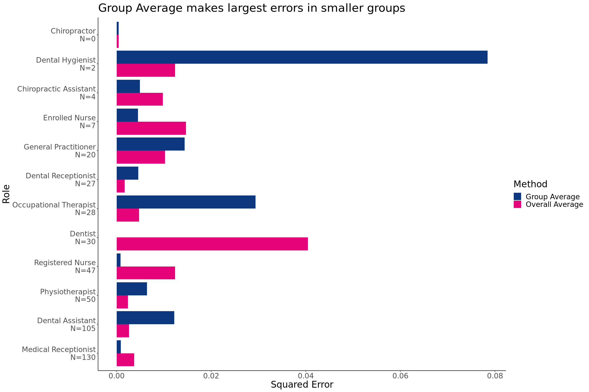
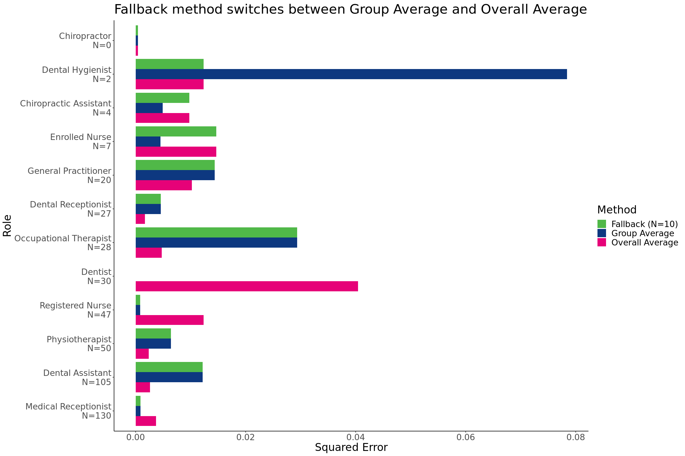
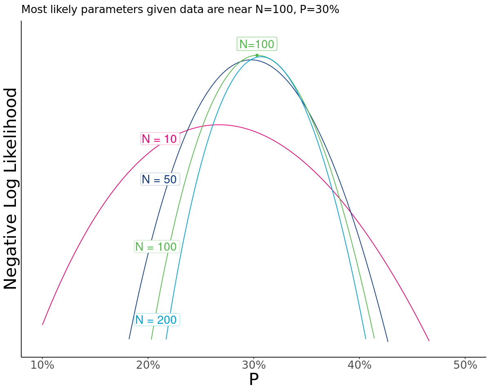
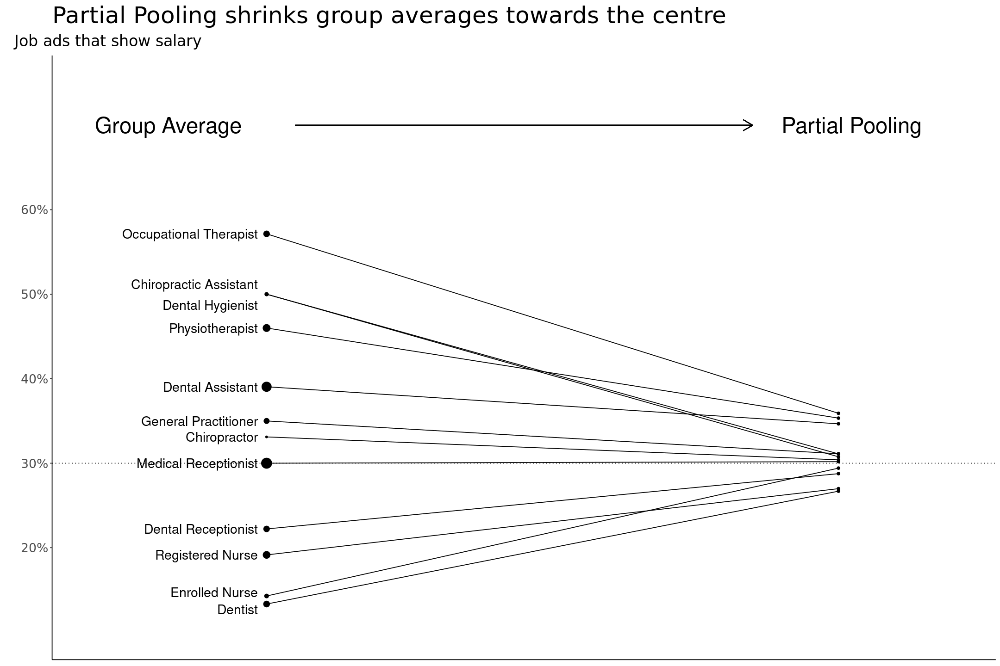
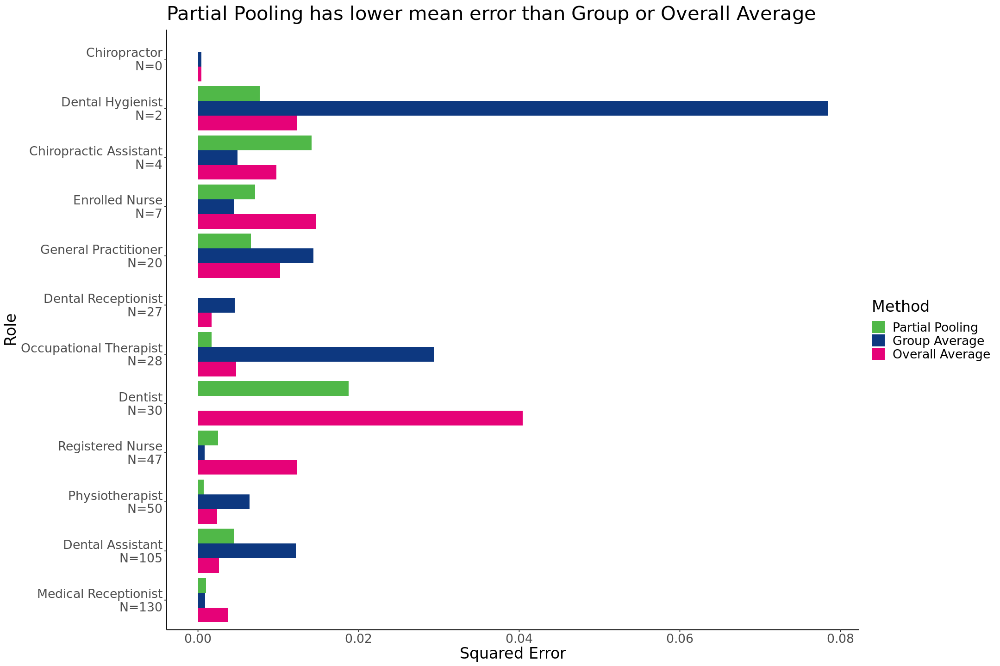
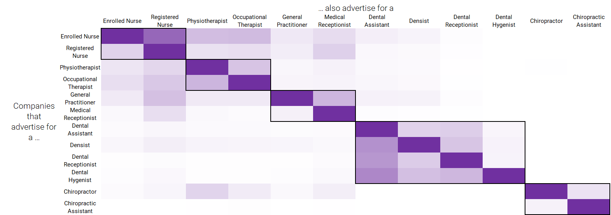
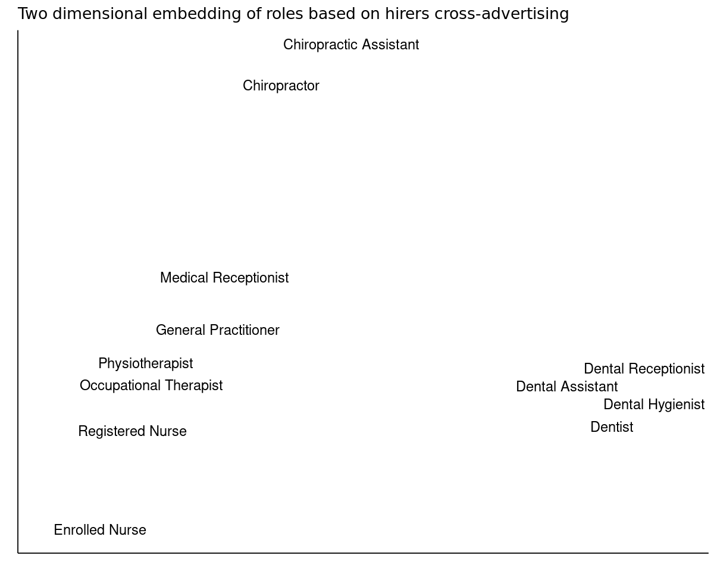

Better than Average Statistics
Better than Average Statistics
Averaging by group are the standard tool for summarising and comparing groups. At SEEK we use averages to inform our customers on the job market and facilitate a fair and efficient employment marketplace. We inform employers and job seekers salary expectations for a role by showing the typical salary range advertised in the market. We help people find potential career paths in SEEK Career Advice using average career transitions other people have made. We help employers with their talent and sourcing strategies by publishing the average supply of jobs and applications in SEEK Employment Reports.
There are more accurate ways to calculate group averages than adding up the values and dividing by the count in each group separately. Using information about how the groups are related can produce better estimates, informing better decisions. Even when the groups are independent, shrinking the averages closer together leads to a more accurate overall estimate by reducing the variance.
Averages can be improved by shrinking the estimates on small groups towards the other groups. In a group with few data it’s much more likely that the group estimate will be far from the true average. Estimates on small groups are unstable; halving the group size doubles the sample variance. Adjusting estimates to be closer to the centre of the entire dataset reduces the variance substantially at the cost of increasing bias. In many applications there is a long tail of small groups and the overall accuracy can be improved substantially.
A simple way to reduce variance is to estimate small groups with the overall average across all data points. Groups below some threshold size are estimated with the overall average. Groups above the threshold size are estimated by their independent group average.
A more effective way to improve estimates is to treat the groups averages as random variables drawn from a common distribution. Each data point from one group informs the common distribution, which updates the estimates of other groups. The estimates for smaller groups, where there is less information, end up closer to the centre of this distribution. This leads to substantially better estimates, and is generally a better default way to calculate group averages.
More complex models may produce better estimates, but are more costly to develop and maintain. Reformulating calculating averages on groups as a machine learning problem enables more sophisticated approaches. Related data sources can inform relationships between the groups which can be incorporated into the model. These methods can tease out subtle relationships that enable more fine grained comparisons between groups. However they can also easily overfit to noise and produce worse estimates, especially when data is scarce.
The best method to calculate averages on groups depends on the situation. When there is low variance in the groups the simplest model of calculating individual group averages works well. When there are groups with a high variance relative to the variance between groups then shrinking will lead to better estimates. The complexity worth having to achieve better accuracy depends on how much that accuracy will inform better outcomes.
These different methods can be illustrated with an example from SEEK’s marketplace.
Show me the money
When an employer posts a job ad on SEEK they can choose whether to show the salary range for the role. For some kinds of roles it is very common to show the salary (such as $20 - $30 an hour), and for other kinds it is not. We can calculate the proportion of employers who show salary for each role.
Below is 12 roles, taken from the thousands of role titles on SEEK, with the percentage of employers who show the salary. For example choosing a random employer who hires dentists, and then choosing a random dentist ad on SEEK from that employer, there is a 13% chance the salary will be shown. The population salary shown is an estimate, but it is within a few percentage points of the true probability because of the large number of advertisers on SEEK. We’ve taken a small sample of 450 job ads on SEEK, and want to use them to estimate the population salary shown.
| Role Title | Population Salary Shown | Sample Ads | Sample Ads with Salary |
|---|---|---|---|
| Dentist | 13% | 30 | 4 |
| Enrolled Nurse | 21% | 7 | 1 |
| Dental Hygienist | 22% | 2 | 1 |
| Registered Nurse | 22% | 47 | 9 |
| General Practitioner | 23% | 20 | 7 |
| Medical Receptionist | 27% | 130 | 39 |
| Dental Assistant | 28% | 105 | 41 |
| Dental Receptionist | 29% | 27 | 6 |
| Chiropractor | 31% | 0 | 0 |
| Physiotherapist | 38% | 50 | 23 |
| Occupational Therapist | 40% | 28 | 16 |
| Chiropractic Assistant | 43% | 4 | 2 |
The sample has 30 Dentist job ads, from different employers, 4 of which show the salary. The simple average 4/30 is around 13% which happens to be very close to the whole population probability. For an enrolled nurse the simple average of 1/7 is 14% which is substantially lower than the probability of 21%. Because the sample is so small the estimates have high variation.
To compare the accuracy of different estimates requires a quantitative metric. We will use the Root Mean Squared Error (RMSE) for each group because it is easy to interpret as the typical percentage point error. The logistic loss (or equivalently binary cross entropy) is more appropriate for estimating proportions, but in this example it does not change the conclusions. For some applications the error should be weighted, for example by volume, but we will treat each group as equally important.
In this example there are only 12 groups, but in many applications real at SEEK we have tens of thousands or more. The techniques here work much better the more groups there are, but 12 is enough to show the impact and make it easy to follow. These group estimates have very high variance which makes these techniques particularly effective. In contrast when estimating average salary, which may vary by 20% within a role, but between roles can vary from $20 an hour to over $100 an hour, there is little benefit in shrinking the estimates.
Baseline Averages
In any machine learning problem it is good to start with a simple baseline. The best constant model is the overall proportion of ads with salary shown. That is the 149 ads with salary shown, divided by 450 ads in the sample, which is 33%.
| Role Title | Overall Sample Average | Population Salary Shown | Error |
|---|---|---|---|
| Dentist | 33% | 13% | 20% |
| Enrolled Nurse | 33% | 21% | 12% |
| Dental Hygienist | 33% | 22% | 11% |
| Registered Nurse | 33% | 22% | 11% |
| General Practitioner | 33% | 23% | 10% |
| Medical Receptionist | 33% | 27% | 6% |
| Dental Assistant | 33% | 28% | 5% |
| Dental Receptionist | 33% | 29% | 4% |
| Chiropractor | 33% | 31% | 2% |
| Physiotherapist | 33% | 38% | -5% |
| Occupational Therapist | 33% | 40% | -7% |
| Chiropractic Assistant | 33% | 43% | -10% |
Squaring the errors, calculating the mean and taking the square root gives an RMSE of 9.8%. This estimate is about 10 percentage points from the population values.
The other obvious baseline is calculating the average for each group individually. For Chiropractor there are no ads in the sample, and so there is no average to calculate. A reasonable estimate is the overall sample average of 33%; it’s a better guess than 0%, 50% or 100%.
| Role Title | Group Average | Population Salary Shown | Error |
|---|---|---|---|
| Dentist | 13% | 13% | 0% |
| Enrolled Nurse | 14% | 21% | -7% |
| Dental Hygienist | 50% | 22% | 28% |
| Registered Nurse | 19% | 22% | -3% |
| General Practitioner | 35% | 23% | 12% |
| Medical Receptionist | 30% | 27% | 3% |
| Dental Assistant | 39% | 28% | 11% |
| Dental Receptionist | 22% | 29% | -7% |
| Chiropractor | 33% | 31% | 2% |
| Physiotherapist | 46% | 38% | 8% |
| Occupational Therapist | 57% | 40% | 17% |
| Chiropractic Assistant | 50% | 43% | 7% |
This gives an RMSE of 11.4%, worse than the overall average. Because many of the samples are small the variance in the estimates is very high leading to larger errors. In particular for Dental Hygienist there are only 2 ads, 1 with salary and so the sample estimate of 50% is much too high.
The two baselines are different extremes of the bias-variance tradeoff. The overall average is the lowest variance estimate, all predictions are the same, but the group estimates are biased away from their true values to the overall average. The group average is the lowest bias estimate, but the variance is high and it gives a worse estimate than the overall average. The group average makes its largest errors on smaller groups, whereas the overall average makes errors independent of the size of the group. A better estimate would be somewhere between the two extremes.

Fallback Method
The fallback method switches from the overall average for small groups to the group average for large groups. When calculating the group average we imputed the average for a Chiropractor, with no ads, as the overall average. For other small groups, like Dental Hygienist with only 2 ads, the overall average is a better estimate as well. Assigning any group below some threshold size to the overall average reduces the largest part of the variance.
The threshold could be chosen through statistical heuristics. Ideally the variance within groups would be balanced against the variance between groups. The variance between the groups can be estimated as the standard deviation of the group averages, which is 15 percentage points. To estimate the binomial sample with standard deviation \(\sigma\) requires a sample size of \(n=\frac{p(1-p)}{\sigma^2}\). Using the overall average \(p=33\%\) and \(\sigma=15 {\rm\ p.p}\) which gives a sample size of 10. Including the small groups in the calculation of standard deviation inflates the standard deviation, which reduces the sample size, so we may want to adjust it to be larger. Alternatively cross-validation could be used to estimate the threshold. In this case it’s not too sensitive and 10 works reasonably well.

The RMSE of the fallback average is 8.1%, substantially lower than the overall average RMSE of 9.8% and the group average of 11.4%.
The change in the estimate across the threshold is very sharp. For groups below the threshold size all the specific data from that group is ignored. For groups above the threshold size all the data from other groups is ignored. A better approach would be to interpolate between the two extremes.
Partial Pooling Model
A weighted average can balance the information from within each group and the information from other groups. In each group we have \(n\) ads, \(k\) of which have salary shown, giving a group proportion of \(p=k/n\). For a group with no data, such as Chiropractor, the proportion should be \(P\) close to the overall average. For groups with some data we could interpolate between the group proportion, and the prior proportion \(P\) by using some effective number of ads \(N\). Then the estimate for the group is the weighted average:
\[\frac{N}{N+n} P + \frac{n}{N+n} p\]
When there are no ads the estimated average is \(P\), and as the number of ads increases it gets closer to the group average, \(p\).
The values for \(N\) and \(P\) can be estimated by a statistical model. The probability that a role has salary shown is assumed to be randomly drawn from a statistical distribution. In particular we assume it is a Beta distribution peaked at \(P\), with strength \(N+2\). For a given \(N\) and \(P\) we can simulate 12 random draws for each role’s probability of showing the salary, and then for each of the 450 jobs in the sample randomly choose whether the salary is shown with the group probability. Doing this very many times we could look at what percentage of draws had exactly our sample data, which gives the probability of the data given \(N\) and \(P\). A good estimate of \(N\) and \(P\) is the one for which the actual observed data is most likely.
The most likely values of \(N\) and \(P\) can be calculated efficiently. The strategy of directly calculating the likelihood of the data is computationally infeasible, even for this small dataset. However for each \(N\) and \(P\) it is possible to calculate the probability as a closed form expression. This can be efficiently numerically optimised even for a very large number of groups. For this data below is a plot showing the likelihood for some different values of \(N\) and \(P\).

This gives most likely values of \(P=30\%\) and \(N=100\). The most likely probability is slightly different to the overall average of 33%. The overall average is the centre of the groups weighted by size, whereas \(P\) is the centre of the groups weighted equally. Partial pooling then shrinks the estimates towards \(P=30\%\), weighting this prior estimate by \(N=100\). A Dental Assistant, with 105 ads, shrinks almost halfway between the group average and 30%. A Dental Hygienist with 2 ads shrinks almost all the way to 30%.

The RMSE of Partial Pooling is 7.3%, a full 2.5 percentage points lower than the overall average, and 0.8 percentage points lower than the fallback method. It does particularly well for roles with many ads where it always beats the worst of the group average and the overall average.

This partial pooling technique is a robust and efficient way to calculate group averages, and is a better default baseline. It was popularised by Efron and Morris in the 1970s, for example in Data Analysis Using Stein’s Estimator and its Generalizations. They showed that even when the groups are truly independent it produces better estimates than the separate group average, at least when the groups are the same size and there are at least 4 of them. Some good introductions to these techniques are George Casella’s An Introduction to Empirical Bayes Data Analysis, David Robinson’s Introduction to Empirical Bayes, and Chapter 7 of Efron and Hastie’s Computer Age of Statistical Inference.
This modelling approach relates the groups to each other, but treats them all the same way. But we know that a Dentist and a Dental Assistant have a different kind of relationship to a Dentist and a Physiotherapist. There isn’t much information in this data to inform that relationship. To model these kinds of relations requires using additional data.
Clustering
Whether a role has a salary shown depends partly on the policies of the employer. Two roles that are commonly posted by the same kinds of employer may have a similar probability of showing the salary. This similarity can be represented as a matrix of how likely an employer is to have advertised for one kind of role, given they have advertised for another.

The roles can be clustered into groups of similar roles, which can be used in other models. In the cross-advertising matrix above the dark boxes show clusters formed by k-means with 5 groups. The averages could be calculated directly on each cluster, instead of each group. The fallback model can be extended to use the clusters as another layer between the individual groups and the overall average. The partial pooling model could pool the role titles towards each cluster, and optionally the clusters to their centre.
Using clustering does not produce significantly better estimates than partial pooling on this dataset. This could be because the underlying cross-advertising data doesn’t align with the outcome of showing salary, and we need to use a different dataset. It could be because the particular numerical representation and clustering algorithm used does not extract the relationship. Maybe a different model on the clusters would do better. There are many ways to model this, and it is easy to overfit this small dataset.
Clustering puts hard boundaries between groups in different clusters. The clusters are simple and interpretable, but the relationship between groups in different clusters is lost. For example Registered Nurses are somewhat likely to be employed in the same organisation as a General Practitioner, but they are in completely separate clusters. An alternative is to model on the quantitative relationships directly.
Embeddings
The similarity matrix of roles can be used directly as features in another machine learning method. Each discrete group is embedded as a vector in some space. These embeddings can be used as continuous predictors in a variety of models from linear and logistic regression, to boosted trees and neural networks. The use of external data to form these categorical embeddings is as a form of transfer learning. The cross-advertising matrix is a form of embedding, and can be visualised by projecting into a two dimensional space.

For this example these embeddings do not seem to produce better estimates. There are even more choices of model for embeddings than for clustering. A penalised logistic regression worked very poorly in this example, doing worse than the overall average. Perhaps there is a model that would work better, but with so few groups there is unlikely to be significant benefit. In examples with many more groups we have seen examples that produce better estimates.
Averages as Machine Learning
Through this example we have gone from calculating individual group averages, through to fitting a complex model on categorical embeddings. Some methods have significantly improved the estimates on this dataset, but others have made them much worse. In real problems we don’t know what the actual population averages are, and have to be careful with evaluating different methods. Considering calculating group averages as a machine learning problem gives a general framework for producing and evaluating estimates.
Calculating a group average is a regression problem where all the predictors are categorical. Typical measures of central tendency such as the mean, median and proportion can be reframed as estimating a value measured with independent random errors from a statistical error distribution. Equivalently this is finding the model parameters that minimise the related loss function, the negative log likelihood of the error distribution.
| Measure of Centrality | Statistical Error Distribution | Loss Function | Loss at Average Value |
|---|---|---|---|
| Mean | Normal | Mean Squared Error | Standard Deviation |
| Median | Laplace | Mean Absolute Error | MAD median |
| Proportion | Binomial | Cross Entropy |
Treating all of the categorical predictors as independent will overfit the small groups when their variance is high. Calculating the proportion of jobs that showed salary for each group led to very poor estimates on small groups. Falling back to the overall average on small groups reduced the error by decreasing variance significantly for a small increase in bias; this is similar to the common practice of putting small groups together into an “Other” category.
Partial pooling is a general technique that reduces the variance on small groups by setting an appropriate prior probability on the groups. This can be efficiently calculated using Empirical Bayes methods, and generally outperforms other simple methods of calculating averages. This should be considered a standard baseline for estimating group averages.
When there is additional related data more complex models can be built. Additional data can be used to cluster or embed the groups, and these can be used as features in more complex models. However this opens up many choices in what data to use, how to represent it, and what model to use. This can be more costly to interpret, and easily overfit small datasets.
Better estimates of group averages enable more granular comparisons. At SEEK we need to understand the employment market across roles, locations, customer segments, and time. The full cross product of these factors is very sparse, and simple averages produce very noisy estimates. Improving our estimates of quantities across these groups helps us make better decisions, and evaluate the decisions we’ve made.